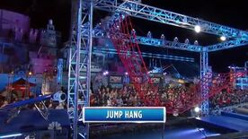

Alle Obstacles
Seizoen 1
Seisoen 2
Seisoen 3
Alle Obstacles
Seizoenen
Seizoen 1
Seisoen 2
Seisoen 3
Seizoen 3 Ninja Warrior Obstacles
Log Grip
Bekijk deze oefening

Jump Hang
Bekijk deze oefening
Unstable Bridge
Bekijk deze oefening